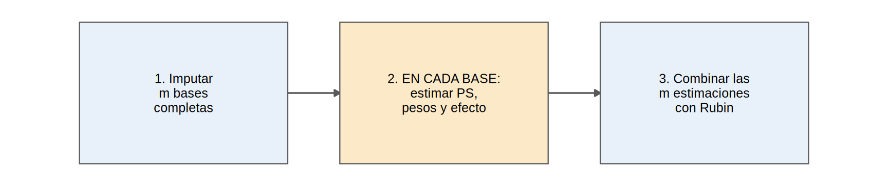

library(tidyverse)
library(mice)
library(survival)
library(sandwich)
source("R/funciones_epi.R")
source("R/funciones_extra_cap1213.R")
ckd <- read_csv("Bases/ckd_faltantes.csv", show_col_types = FALSE) |>
mutate(sexo = factor(sexo, levels = c("Mujer", "Hombre")), luacr = log(uacr))
oraculo <- read_csv("Bases/ckd_isglt2_oraculo.csv", show_col_types = FALSE) |>
mutate(luacr = log(uacr), sexo = factor(sexo, levels = c("Mujer", "Hombre")))Imputación en análisis causales y de supervivencia
Nota🩺 Escenario
Quieres estimar el efecto del iSGLT2 sobre el tiempo hasta el evento renal (Cox) y también con ponderación por PS (Cap. 12). Pero la UACR, un confusor clave, falta en un tercio de los pacientes. ¿Imputas y luego haces tu análisis habitual? Casi: hay tres detalles que, si los olvidas, sesgan el resultado hacia el nulo.
La imputación de 13.4 sirve para una regresión. En estudios de supervivencia y causales hay que cuidar tres cosas:
| Situación | Qué hay que hacer |
|---|---|
| Supervivencia | Incluir en el modelo de imputación el indicador de evento y el riesgo acumulado de Nelson-Aalen, no solo el tiempo |
| Efecto causal (IPW, emparejamiento, AIPW) | Imputar primero y repetir todo el análisis causal en cada base imputada; combinar con Rubin |
| Interacciones y no linealidades | El modelo de imputación debe contenerlas (o imputar por grupos) |
Lo que vamos a hacer
- Imputar con la información de supervivencia correcta y ver qué pasa si se omite.
- Combinar imputación con IPW (el enfoque within).
- Ver qué hacer cuando falta el desenlace y cómo redactar el método.
Paso 1: supervivencia, imputar con el evento y el riesgo acumulado
Si en una regresión de Cox faltan covariables (aquí, la UACR), el modelo de imputación debe contener el desenlace. En supervivencia el desenlace tiene dos partes (tiempo y evento), y la forma correcta de resumirlas es incluir:
- el indicador de evento y
- el riesgo acumulado de Nelson-Aalen \(H(t)\) en el momento observado de cada paciente (resume la información conjunta de tiempo y evento).
No basta con incluir solo el tiempo (la relación con la covariable no es lineal) ni solo el evento (White y Royston, 2009).
ckd$H <- nelsonaalen(ckd, tiempo_meses, evento) # riesgo acumulado de Nelson-Aalen
d <- ckd |> select(pendiente_tfg, evento, tiempo_meses, H, isglt2, edad, sexo, hba1c, pas, tfg_basal, luacr, ecv)
pm <- make.predictorMatrix(d)
pm[, "tiempo_meses"] <- 0 # usar H y evento, no el tiempo bruto
imp <- mice(d, m = 20, maxit = 10, method = "pmm", predictorMatrix = pm, printFlag = FALSE, seed = 1)
f_cox <- Surv(tiempo_meses, evento) ~ isglt2 + I(edad / 10) + sexo + hba1c + pas + tfg_basal + luacr + ecv
cox_mi <- summary(pool(with(imp, coxph(Surv(tiempo_meses, evento) ~ isglt2 + I(edad / 10) + sexo + hba1c + pas + tfg_basal + luacr + ecv))))
cox_ref <- coxph(f_cox, data = oraculo)
cox_cc <- coxph(f_cox, data = d)
tab_cox <- tibble(analisis = c("Datos completos (referencia)", "Casos completos", "Imputación con evento y H(t)"),
HR_isglt2 = c(exp(coef(cox_ref)["isglt2"]), exp(coef(cox_cc)["isglt2"]), exp(cox_mi$estimate[cox_mi$term == "isglt2"])))
tab_cox |> mutate(HR_isglt2 = round(HR_isglt2, 3))# A tibble: 3 × 2
analisis HR_isglt2
<chr> <dbl>
1 Datos completos (referencia) 0.55
2 Casos completos 0.623
3 Imputación con evento y H(t) 0.555Qué vemos: el HR con casos completos (0.62) queda sesgado hacia el nulo respecto de la referencia (0.55); la imputación con el evento y H(t) lo recupera (0.555).
El resultado “feo”: imputar sin la información de supervivencia
d_s <- d |> select(-evento, -H, -tiempo_meses) # imputar SIN información de supervivencia
imp_s <- mice(d_s, m = 20, maxit = 10, method = "pmm", printFlag = FALSE, seed = 1)
fits <- lapply(1:20, \(i) {
di <- complete(imp_s, i); di$tiempo_meses <- d$tiempo_meses; di$evento <- d$evento
coxph(f_cox, data = di)
})
hr_sin <- exp(summary(pool(as.mira(fits)))$estimate[1])
round(hr_sin, 3)[1] 0.586Qué vemos: sin el desenlace en la imputación, el HR queda en 0.59: parte de la asociación se pierde (el imputador no sabía quién tuvo el evento).
Paso 2: efecto causal con IPW, analizar cada base imputada
Con IPW (o emparejamiento, AIPW) el orden importa. El enfoque recomendado (within) es:

No se promedian los pesos ni las bases antes de analizar: se combinan las estimaciones (no los datos).
estimar_ipw <- function(dd) {
ps <- fitted(glm(isglt2 ~ I(edad / 10) + sexo + hba1c + pas + tfg_basal + luacr + ecv, data = dd, family = binomial))
w <- ifelse(dd$isglt2 == 1, 1 / ps, 1 / (1 - ps))
f <- lm(pendiente_tfg ~ isglt2, data = dd, weights = w)
c(estimado = unname(coef(f)["isglt2"]), varianza = vcovHC(f, "HC1")["isglt2", "isglt2"])
}
res_imp <- t(sapply(1:20, \(i) estimar_ipw(complete(imp, i)))) # paso 2: IPW en cada base imputada
rubin <- pool.scalar(res_imp[, 1], res_imp[, 2], n = nrow(d)) # paso 3: reglas de Rubin
tab_ipw <- tibble(analisis = c("Datos completos (referencia)", "Casos completos", "IM + IPW (Rubin)"),
ATE = c(estimar_ipw(oraculo)[1], estimar_ipw(na.omit(d))[1], rubin$qbar),
EE = c(sqrt(estimar_ipw(oraculo)[2]), sqrt(estimar_ipw(na.omit(d))[2]), sqrt(rubin$t)))
tab_ipw |> mutate(across(where(is.numeric), \(x) round(x, 3)))# A tibble: 3 × 3
analisis ATE EE
<chr> <dbl> <dbl>
1 Datos completos (referencia) 1.34 0.048
2 Casos completos 1.28 0.06
3 IM + IPW (Rubin) 1.35 0.048Qué vemos: la IM + IPW (1.35) coincide con la referencia (1.34); el análisis de casos completos (1.28) queda sesgado. (Todas estas estimaciones están por encima de la verdad, 0.93, por la confusión no medida del Cap. 12; aquí solo evaluamos el efecto de los faltantes.)
El paquete MatchThem automatiza este flujo (imputación → pesos en cada base → regresión → Rubin):
## Con los paquetes MatchThem y WeightIt (no se ejecuta aquí)
library(MatchThem)
imp_mice <- mice(d, m = 20, maxit = 10, method = "pmm", printFlag = FALSE, seed = 1)
bases_ponderadas <- weightthem(isglt2 ~ I(edad / 10) + sexo + hba1c + pas + tfg_basal + luacr + ecv,
datasets = imp_mice, approach = "within", method = "glm", estimand = "ATE")
modelos <- with(bases_ponderadas, lm(pendiente_tfg ~ isglt2))
summary(pool(modelos), conf.int = TRUE)
Advertencia⚠️ Errores frecuentes al combinar imputación y análisis causal
- Promediar los pesos o las bases antes de analizar: haz el análisis por separado en cada base y combina las estimaciones.
- Imputar solo en un brazo: imputa con todos los pacientes (el tratamiento es un predictor más).
- Dejar el tratamiento fuera del modelo de imputación: sesga hacia el nulo.
- Imputar el desenlace sin pensarlo: ver el paso siguiente.
Paso 3: cuando falta el desenlace
Si falta el desenlace (pérdidas de seguimiento), hay dos opciones:
- IPCW: ponderar a quienes tienen desenlace por la inversa de la probabilidad de ser observados (Cap. 19).
- Imputar el desenlace con un modelo que incluya tratamiento, covariables y variables auxiliares (medidas intermedias, p. ej., TFGe a los 6 meses).
Si el abandono depende del desenlace no observado (MNAR), ninguna de las dos basta: se necesita un análisis de sensibilidad (13.6).
Otras decisiones prácticas
- Interacción tratamiento × covariable: imputa por separado en cada brazo o incluye los productos.
- Covariables no lineales: imputa la variable ya transformada (
luacr); cuidado con los splines. - Exposición con faltantes: imputarla es válido (es una covariable más), con el desenlace dentro del modelo.
- Datos agrupados (centros): incluye el centro o usa un modelo de imputación multinivel.
- Muchas variables:
quickpred()y variables auxiliares bien elegidas.
Cómo redactar el método
Un párrafo para el apartado de Métodos, adaptado de un ejemplo del autor (Taller 3) a esta base simulada:
Los datos faltantes se imputaron mediante ecuaciones encadenadas (
mice), asumiendo datos faltantes al azar (MAR). Se crearon 20 bases imputadas con 10 iteraciones. El modelo de imputación incluyó todas las covariables del modelo de análisis, el tratamiento, el desenlace, el indicador de evento y el estimador de Nelson-Aalen del riesgo acumulado (White y Royston, 2009; van Buuren, 2018). Los resultados se combinaron con las reglas de Rubin. Como análisis de sensibilidad se presentan los casos completos y un ajuste delta para el supuesto MAR.
Importante🎯 En resumen
- En supervivencia, imputa con el indicador de evento y el riesgo acumulado de Nelson-Aalen.
- En análisis causales (IPW, emparejamiento, AIPW): imputa → repite todo el análisis en cada base → combina con Rubin.
- El modelo de imputación debe incluir tratamiento, desenlace e interacciones del análisis.
- Omitir el desenlace del modelo de imputación sesga las asociaciones hacia el nulo.
Ejercicio
- Calcula el HR con imputación pero sin
H(soloevento). ¿Cuánto se acerca a la referencia? - Aplica emparejamiento (
MatchIt) dentro de cada base imputada y combina los ATT con Rubin. - Ajusta una IM + fórmula g (12.6) para el ATE y compárala con el IPW.